Kyonan, Chiba: things to do, food and stays
Kyonan · Chiba
Kyonan
Highlighted on the Chiba map.
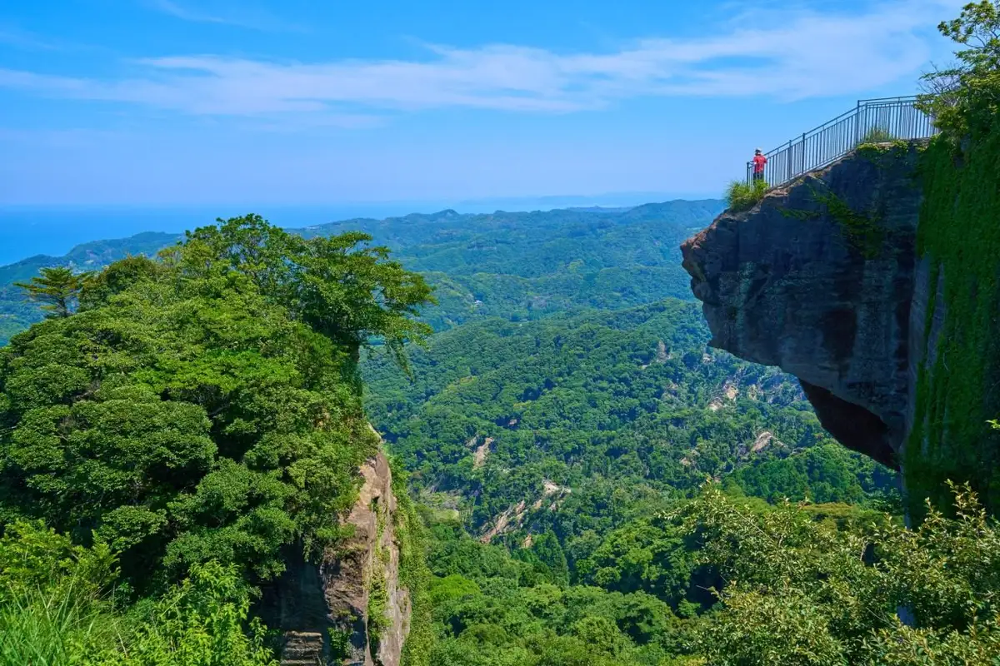
Stay
BOTANICAL POOL CLUB
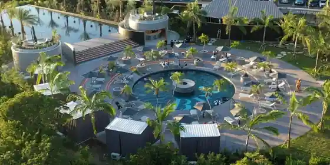
BOTANICAL POOL CLUB
いっぺ THE SAKE RYOKAN
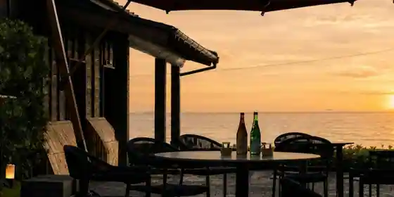
Ippe THE SAKE RYOKAN
Inn at Sonojuntotennen Onsen in Motomei, Kyonan.
みささ
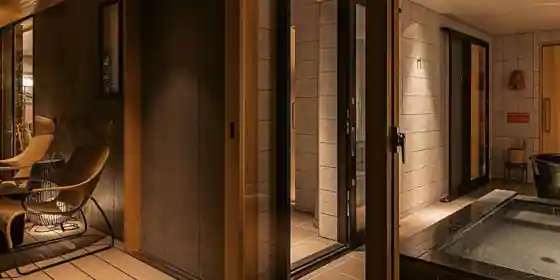
Misasa
Inn at Kutto Onsen in Ryushima, Kyonan with one group per day.
amane
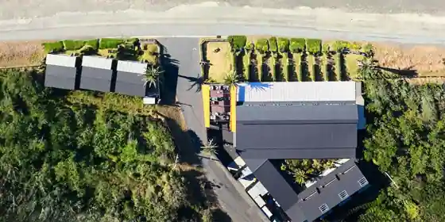
amane
CAP MARTIN Funny house
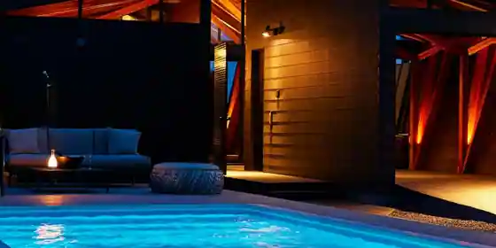
CAP MARTIN Funny house
さざね
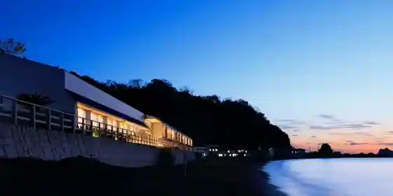
Sazane
Beachside Onsen Resort ゆうみ
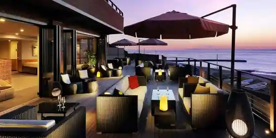
Beachside Onsen Resort Yumi
Inn at Saido Onsen in Motomei, Kyonan.
安房温泉 紀伊乃国屋別亭
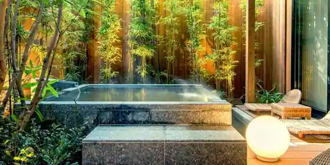
Awa Onsen Ki No Kuni Ya Betsu Tei
Inn at Awa Onsen in Ryushima, Kyonan with open-air baths.
MORIKAZEバケーションホーム＆リトリート
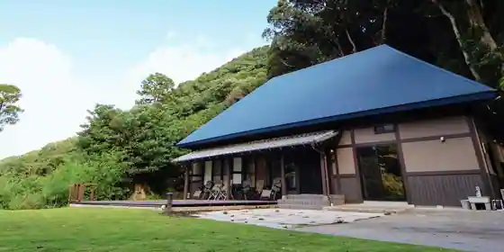
MORIKAZE Bakeshonhomu & Ritorito
Inn in Yokone, Kyonan with one group per day and a retreat concept.
Refwind
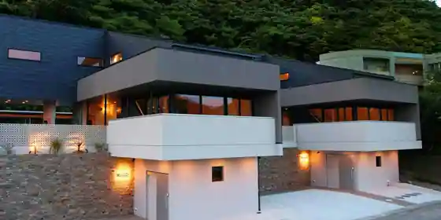
Refwind
安房温泉 紀伊乃国屋
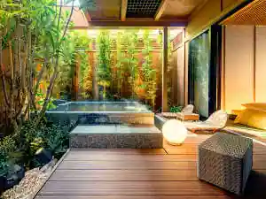
Awa Onsen Ki No Kuni Ya
Inn at Awa Onsen in Ryushima, Kyonan with open-air baths and in-room dining.
お宿 ひるた
O Yado Hiruta
Inn in Ryushima, Kyonan with in-room dining.
Dining
鋸南食堂
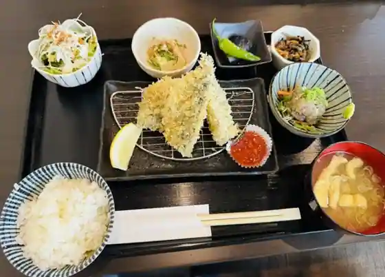
Kyonan Shokudo
ばんや
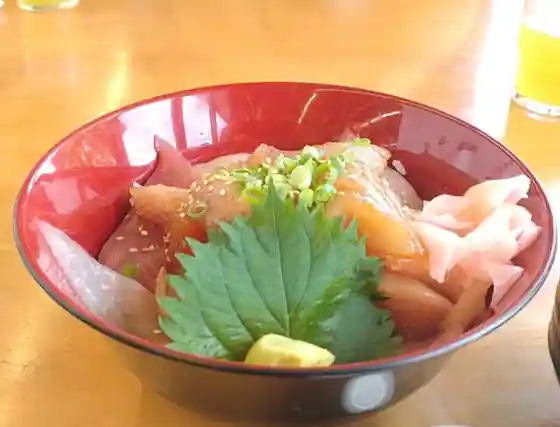
Banya
音楽と珈琲の店 岬
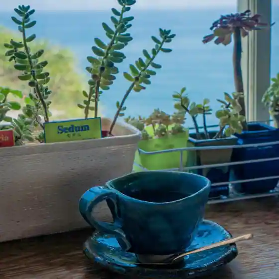
Ongaku To Coffee No Misaki
住吉飯店
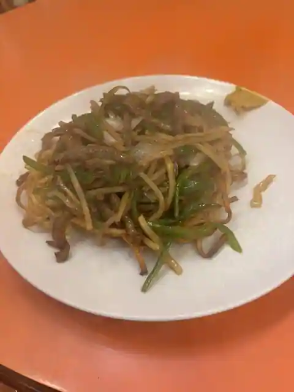
Sumiyoshi Meshi
Cafe金次郎
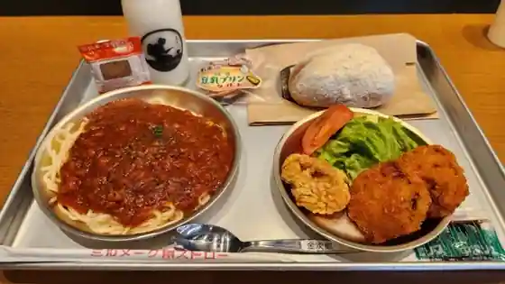
Cafe Kinjiro
惣四郎
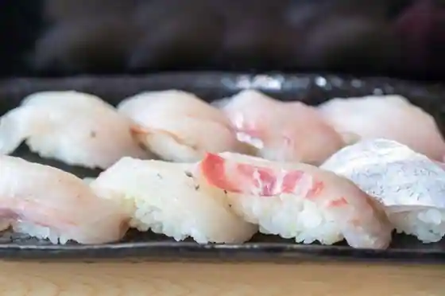
So Shiro
保田食堂
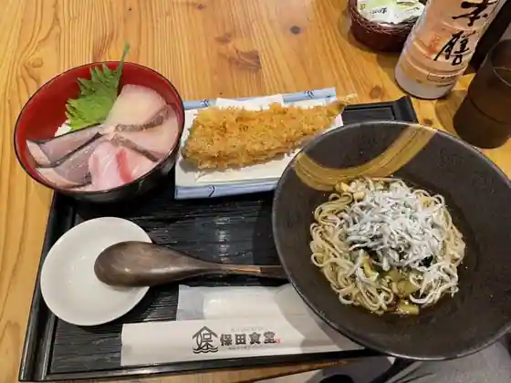
Yasuda Shokudo
PizzeriaTrattoriaDaPeGONZO
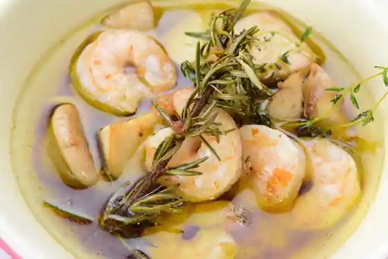
PizzeriaTrattoriaDaPeGONZO
里山食堂
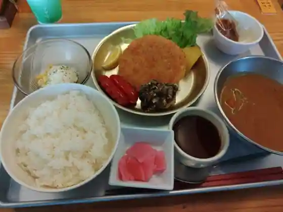
Satoyama Shokudo
なぶら
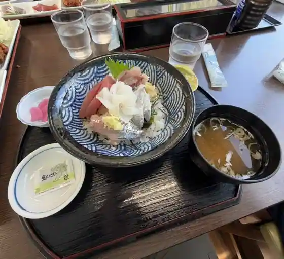
Nabura
夕凪
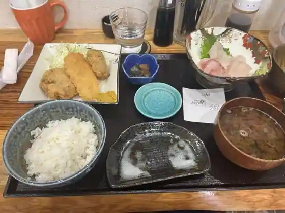
Yunagi
らかん寿し 松月
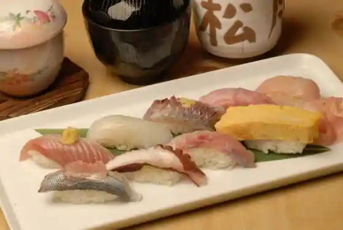
Rakan Hisashi Shi Matsuzuki
front village diner ほたようちえん
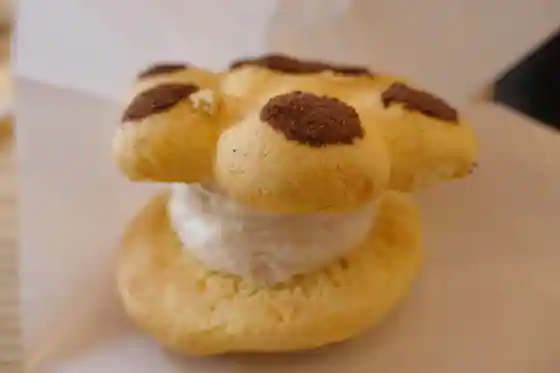
front village diner Hotayochien
なのはなぐみ かつ菜 保田店
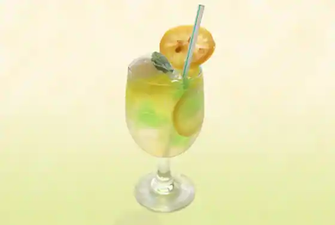
Nanohanagumi Katsu Na Yasuda
道の駅 保田小学校
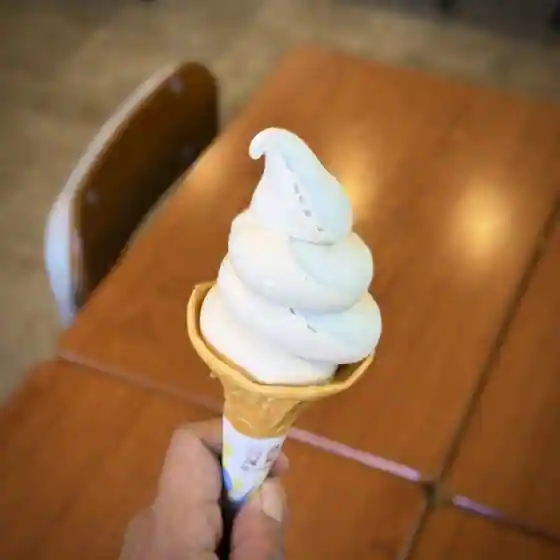
Michi No Eki Yasuda Shogakko
ゆうみ Sauna Cafe
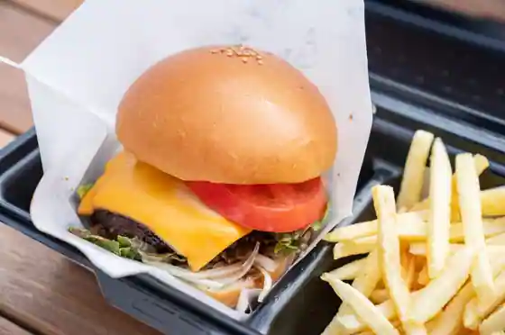
Yumi Sauna Cafe
磯料理 山田屋
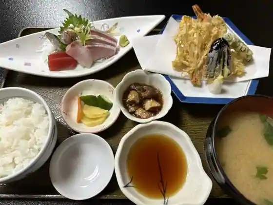
Iso Ryori Yamada Ya
風土職人 あ'まぁ～ね
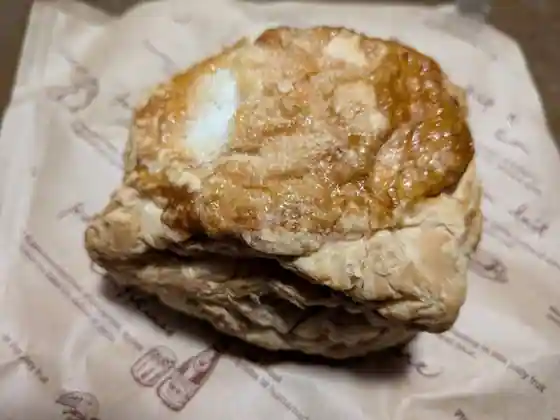
Fudo Shokunin A ' Ma ~ Ne
ビーチサイド温泉リゾート ゆうみ
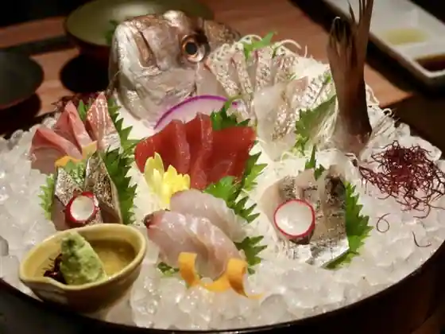
Bichisaido Onsen Resort Yumi
ばんや 新館
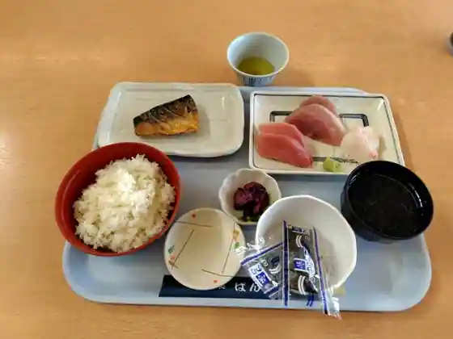
Banya Shinkan
きのや
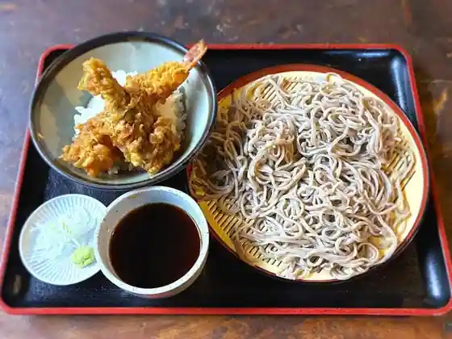
Kinoya
紀伊乃国屋
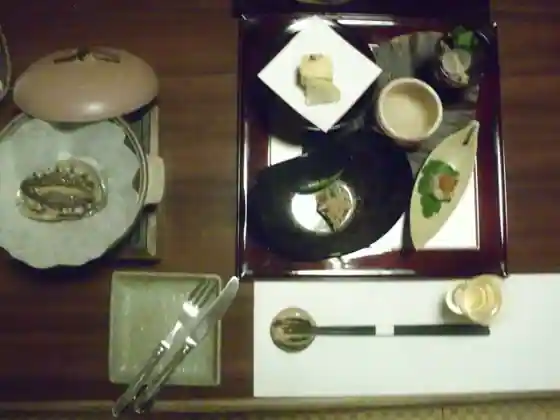
Ki No Kuni Ya
Sights
Nokogiriyama Nippon Tera (Jigoku no Zoki)
Ongaku to Kohii no Mise Misaki
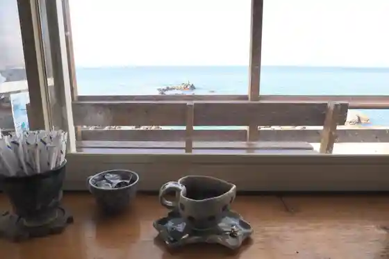
Banya Honkan
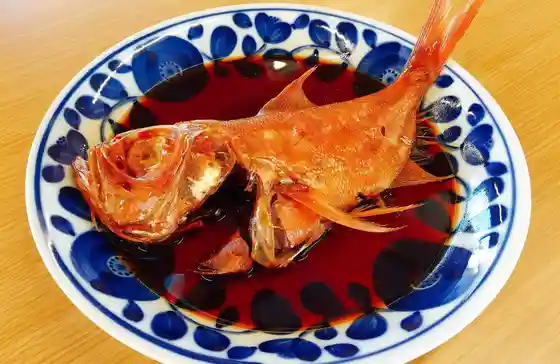
Miyako City Koryu Shisetsu Roadside Station Yasuda Shogakko
Kogetsu Suisen Rodo
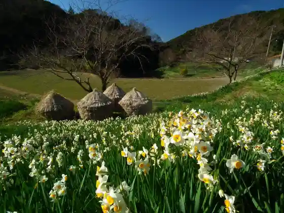
Sakuma Damu Park
Yasuda Beach
Warai Raku Baths
Moto Mei Beach
Roadside Station
Wokuzure Suisen Sato
Miyako City Koryu Shisetsu Roadside Station Yasuda Sho Fuzoku Yochien
Hishikawa Moronobu Memorial Museum
BOTANICAL POOL CLUB
Dai Roku Beach
Minamotonoyoritomo Joriku Chi
Katsuyama Beach
Kisugaura Coast (Kisugaura Beach)
BASE1901